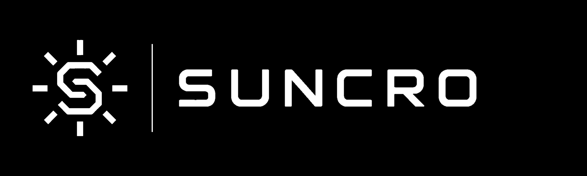

Current conditions
See current sunlight conditions alongside your device status.
A Pezic Tech product / 01

SUNCRO brings current sunlight conditions, the daily overview and device status together in one dashboard.
SUNCRO / 01
See current sunlight conditions alongside your device status.
Follow how conditions change throughout the day and see the essentials at a glance.
Check whether your device is connected from the dashboard.
Interactive preview
This preview uses sample data.
04 / Contact
Write to us with a product question, a support request or an idea for working together.